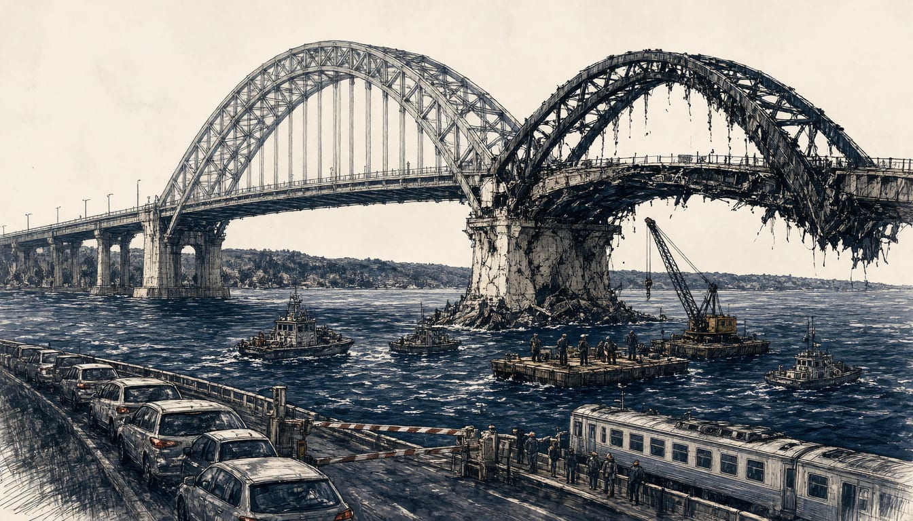

Ukrainian drones strike Crimea bridge and close road and rail traffic
Russia's Defence Ministry reported intercepting 1,336 drones overnight, the highest figure since 2022, and Kremlin spokesman Dmitry Peskov admitted a weakness in Russian air defence.

Ukrainian drones struck the right arch of the Crimean bridge overnight on 16 November, closing road and rail traffic. No injuries were reported. Ukraine's Armed Forces carried out the attack, and traffic was restricted until midday.
Kyiv calls its strikes justified retribution for Moscow's missile and drone barrages, attacks that have killed hundreds of civilians and cut power to millions. Russia's Defence Ministry said it intercepted 1,336 drones overnight, the highest figure since the full-scale invasion began in 2022. Kremlin spokesman Dmitry Peskov admitted a weakness in Russian air defence. "Unfortunately, no system in the world can provide 100 percent protection against such large-scale strikes," he said.
A drone alert was declared in Crimea at around 4 a.m. on 16 November. The Russian Emergencies Ministry's regional department reported air defence operations in the east of the peninsula. Sergei Aksyonov said automobile traffic on the bridge would be restricted until at least midday local time while emergency services were deployed to the scene.
President Volodymyr Zelensky said Ukrainian forces have disabled more than 55% of Russia's oil refining capacity. He said Washington had proposed Kyiv cede some territory in exchange for NATO membership. Peskov criticised Zelensky for making the US proposal public, but gave no view of Moscow's own. War correspondent Alexander Kots wrote that the strike aimed to build leverage before talks between Vladimir Putin, Donald Trump and Xi Jinping.
The rail operator Grand Service Express said four Tavria trains ran late by two to 4.5 hours after the overnight closure. Russian Deputy Prime Minister Marat Khusnullin said an assessment of damage to the structure is under way. The timeframe for full restoration will be clear soon, he said.